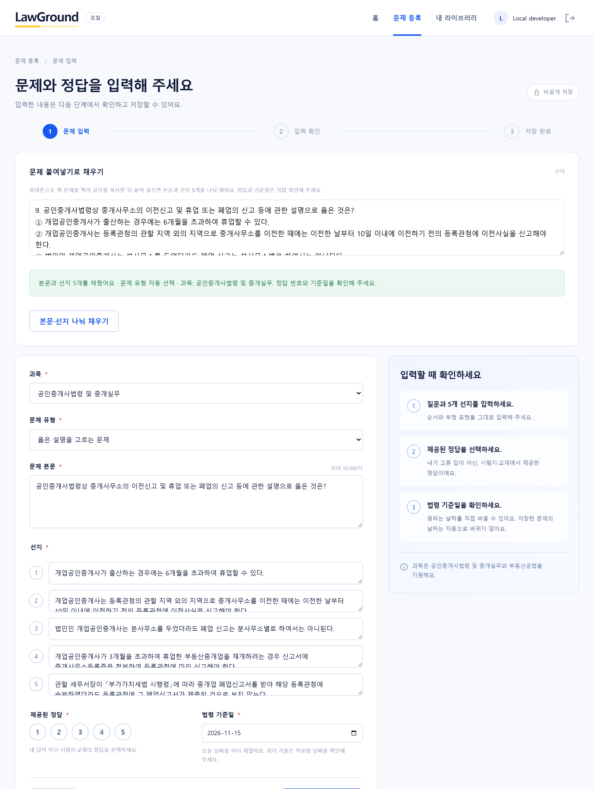

| 팀명 | 졸업시켜조 |
|---|---|
| 팀원 | 32213775 임수종 TODO 학번 윤영주 |
| 지도교수 | TODO |
| 소속 | 단국대학교 소프트웨어학과 |
| 제출일 | 2026. 11. 16. |
공인중개사 수험생이 기출 선지 하나가 왜 옳고 그른지 확인하려면 법률·시행령·시행규칙을 오가며 조문을 직접 찾아야 한다. 법령은 자주 개정되므로 교재 해설이 현행 법령과 어긋나는 경우도 생긴다. 범용 LLM에 물으면 근거 없이 그럴듯한 답을 받을 위험이 있다.
LawGround는 문제와 선지, 제시된 정답 번호를 입력하면 국가법령정보센터에서 받은 현행 조문 2,422개 중 근거 후보 5개를 검색한다. LLM은 그 후보 조문 안에서만 정답이 법령과 맞는지 판정하고, 서버는 LLM이 낸 인용 문구가 원문과 글자 단위로 같은지 다시 확인한다. 결과 화면은 판정과 근거 조문 원문, 선지별 일치·불일치, 틀린 선지의 고친 문장과 변형 유형, 같은 조문을 물은 비슷한 기출을 함께 보여 준다.
검색은 형태소 기반 단어 검색(BM25)과 의미 검색(bge-m3)을 RRF로 결합하고 재순위 모델로 정렬한다. 25~36회 공인중개사 2차 1교시 기출 802문제로 평가한 결과, 정답 근거 조문이 검색 상위 5개 안에 드는 비율(Recall@5)은 1과목 93%, 부동산공법 89%였다. 시스템은 Spring Boot 백엔드, Python FastAPI 모델 서버, PostgreSQL(pgvector), RabbitMQ로 구성되며, 분석은 큐 기반 작업으로 단계마다 checkpoint를 남겨 실패해도 이어서 처리한다.
| 목표 | 기준 |
|---|---|
| 근거를 찾는다 | 정답 근거 조문이 검색 상위 5개 안에 들어 있을 것 |
| 틀린 답을 승인하지 않는다 | 근거가 부족하면 단정하지 않고 판단 보류 |
| 근거를 보여 준다 | 판정마다 원문 인용과 위치를 제시하고, 인용이 원문과 다르면 저장하지 않음 |
| 기준일을 지킨다 | 사용자가 고른 기준일에 시행 중인 조문으로만 판정 |
| 공부로 이어진다 | 선지별 설명, 변형 유형, 같은 조문의 비슷한 기출 |
공인중개사 2차 1교시 두 과목(공인중개사법령 및 중개실무, 부동산공법)을 다룬다. 판례·서식·다른 법률 소관 문제와 민법·세법 과목은 범위 밖이다.
| 이름 | 학번 | 역할 | 담당 |
|---|---|---|---|
| 임수종 | 32213775 | AI·검색·평가 | Python AI 서버(형태소·임베딩·재순위·검증), 법령 수집 변환, 평가 데이터셋·라벨·지표, 확장 기능(문장 확인·변형 비교·비슷한 기출) |
| 윤영주 | TODO | 백엔드·파이프라인·화면 | Spring 백엔드, 로그인·문제 관리, 분석 작업 큐·워커, 검색·검증 연결과 결과 저장, 추천·평가·배치, 사용자 화면 |
| 대상 | 특징 | LawGround와의 차이 |
|---|---|---|
| 국가법령정보센터 | 조문 원문·연혁 제공, 키워드 검색 | 선지 문장으로 근거 조문을 찾아 주지 않는다. LawGround는 이 원문을 그대로 근거로 쓴다. |
| 기출 해설서·해설 사이트 | 사람이 쓴 해설 | 출간 이후의 개정을 반영하지 못한다. LawGround는 기준일의 현행 조문으로 다시 확인한다. |
| 범용 LLM 챗봇 | 자연어 질문과 답변 | 근거가 검증되지 않는다. LawGround는 검색한 후보 조문 안에서만 판정하고, 인용이 원문과 일치하는지 검사한다. |
방법론으로는 검색 증강 생성(RAG)을 따른다. 법률 문장은 용어가 글자 그대로 일치해야 찾히는 경우가 많아 단어 검색을 기본으로 하고, 표현이 바뀐 선지를 보완하기 위해 의미 검색을 결합했다.
Spring Boot는 로그인, 문제 관리, 분석 접수와 상태 조회, 결과 저장을 맡고, Python FastAPI 서버는 형태소 분석·임베딩·재순위·LLM 검증 같은 모델 계산만 맡는다. 두 서버는 OpenAPI로 정한 내부 계약으로만 통신하며, 모든 내부 요청에 내부 토큰과 계약 버전 헤더를 검사한다. 모델은 커밋 해시로 버전을 고정하고 Spring이 시작할 때 Python 서버의 모델 버전과 대조한다.
분석 요청은 멱등 키와 함께 접수되어 DB에 실행(run)과 작업(job)을 만들고 즉시 202 응답을 돌려준다. 작업은 RabbitMQ로 전달되고 워커가 네 단계를 차례로 처리한다. 단계마다 결과를 checkpoint로 저장하므로 검증 단계가 실패해 재시도할 때 시간이 오래 걸리는 검색을 다시 하지 않는다. 리스와 fencing token으로 두 워커가 같은 작업을 동시에 저장하지 못하게 했고, 리스가 끊기거나 발행되지 않은 작업은 복구 스케줄러가 다시 큐에 넣는다. 최종 결과(판정·선지 분석·근거 인용)는 하나의 트랜잭션으로 저장하며 DB 트리거로 이후 수정·삭제를 막는다.
BAAI/bge-m3 1024차원 벡터를 pgvector 코사인 거리로 찾는다.BAAI/bge-reranker-v2-m3로 다시 정렬해 상위 5개를 고른다. 결합 후보가 이미 5개 이하라 잘리는 것이 없으면 재순위를 생략하는 옵션을 두었다.| 과목 | 법령 | 조문 수 |
|---|---|---|
| 공인중개사법령 및 중개실무 | 공인중개사법, 부동산 거래신고 등에 관한 법률 (각 법·시행령·시행규칙) | 267 |
| 부동산공법 | 국토계획법, 도시개발법, 도시정비법, 건축법, 주택법, 농지법 (각 법·시행령·시행규칙) | 2,155 (별표 106 포함) |
국가법령정보 API에서 받은 조문은 시행일별 버전으로 저장한다(laws → law_versions → law_articles → law_chunks). 사용자 데이터는 members → questions → question_choices, 분석 결과는 trace_runs → processing_jobs / evidence_results / choice_analyses로 저장한다. 스키마는 Flyway 마이그레이션 V001~V010으로 관리한다.
| 기능 | 설명 |
|---|---|
| 붙여넣기 입력 | 시험지 문장을 붙여넣으면 본문, 선지 5개, 과목, 문제 유형이 자동으로 채워진다. 정답 번호와 법령 기준일만 확인하면 된다. |
| 근거 조문 검색 | 기준일에 시행 중인 조문 2,422개 중 근거 후보 5개를 찾고, 조문 원문·시행일·국가법령정보센터 링크를 보여 준다. |
| 정답 판정 | 제시된 정답을 근거 확인·근거와 불일치·판단 보류로 판정한다. 판단 보류는 기술 오류와 구분해 정상 판정으로 보여 준다. |
| 선지별 분석 | 선지마다 조문과의 일치·불일치를 표시하고, 틀린 선지는 고친 문장과 변형 유형을 붙인다. |
| 비슷한 기출 | 25~36회 기출 선지 3,950개 중 같은 조문을 물은 선지를 최대 3개 보여 주고, 달라진 글자 표시와 공부 팁을 준다. |
| 내 문제 라이브러리 | Google 로그인으로 문제를 저장·수정하고 분석 진행 단계를 실시간으로 본다. 근거가 비슷한 내 문제를 추천한다. |
화면 모듈(frontend/src/domain.js)이 붙여넣은 문장에서 문제 번호, 선지 기호(①~⑤), 과목을 나타내는 법령명, "옳은 것/틀린 것" 같은 문제 유형 표현을 찾아 입력 칸을 채운다. 서버는 본문·선지 길이와 문자 정책, 과목 값을 다시 검사한다.

3장의 파이프라인으로 처리한다. 화면은 실행 ID로 작업 단계를 다시 조회하므로 새로고침하거나 다른 화면으로 이동해도 진행 상태가 이어진다. 결과 화면은 실행 당시 문제 snapshot을 보여 주어, 이후 수정한 문제와 혼동하지 않게 한다.
검증 응답의 선지별 분석은 Spring이 근거 인용 ID와 연결해 원자 저장한다(choice_analyses, choice_analysis_evidences). 고친 문장은 불일치 선지에 실제 근거가 연결된 경우에만 표시한다.
Python 서버(app/services/similar.py)가 기출 선지 은행을 메모리에 두고, 같은 과목에서 (1) 입력한 문제 자신을 제외하고 (2) 글자 유사도에 같은 근거 조문이면 가산점을 더해 (3) 문제당 1개씩 최대 3개를 고른다. 조문이 다른 선지는 유사도가 충분히 높을 때만 낸다. LLM을 쓰지 않아 응답이 약 0.1초이며, 맞는 기출이 없으면 억지로 채우지 않는다. 변형 비교 모듈(variation.py)이 달라진 글자 구간과 변형 유형, 공부 팁을 만든다.
Google OIDC 로그인과 Spring Session JDBC로 세션을 관리하고, CSRF를 검사한다. 문제는 revision으로 동시 수정을 막으며, 남의 문제나 분석 결과는 404로 숨긴다. 관련 문제 추천은 근거 조문과 문제 임베딩을 함께 사용한다.
| 영역 | 기술 |
|---|---|
| 백엔드 | Java 21, Spring Boot 3.5 (MVC · Security · OAuth2 Client · Session JDBC · AMQP · JPA · Flyway) |
| 데이터 | PostgreSQL 16 + pgvector 0.8, RabbitMQ 4.2 |
| AI 서버 | Python, FastAPI, kiwipiepy, BAAI/bge-m3, BAAI/bge-reranker-v2-m3, Gemini API |
| 화면 | HTML · CSS · ES 모듈 (프레임워크 없음, Spring이 정적 파일로 제공) |
| 품질 | JUnit 5, MockMvc, Testcontainers, pytest, Playwright, OpenAPI 계약 검사, GitHub Actions |
.env와 환경변수에만 두고 저장소에 올리지 않는다. 저장소 검사 스크립트가 CI에서 비밀값과 제외 파일을 확인한다.| 검사 | 내용 |
|---|---|
| backend-check | 저장소 검사, 포맷(spotless), 단위 테스트, Testcontainers 통합 테스트(실제 PostgreSQL·RabbitMQ·Flyway), JAR 빌드 |
| ai-check | pytest (계약, 검증, 검색 보조, 확장 기능) |
| contracts-check | 사용자·내부 OpenAPI 계약과 예시, 실제 응답 캡처 대조 |
| frontend-check | 화면 모듈 테스트 |
| browser-check | Playwright(Chromium)로 로그인부터 결과 화면까지 흐름 검사 |
CI는 main으로 가는 PR과 main push마다 실행된다. 외부 모델 없이 돌도록, 통합 테스트는 계약대로 응답하는 가짜 HTTP 서버를 사용한다.
로컬 실행 환경에서 실제 법령 색인과 Gemini로 분석한 결과다(기준일 2026-11-11). 판정·설명·고친 문장·인용은 DB에 저장된 결과를 그대로 옮겼다.
입력
공인중개사법령상 중개사무소의 이전신고 및 휴업 또는 폐업의 신고 등에 관한 설명으로 옳은 것은? (제시한 정답: 1번)
판정: ✅ 근거 확인 (SUPPORTED · SUFFICIENT_EVIDENCE)
1번 선지는 임신 또는 출산이 휴업기간 6개월을 초과할 수 있는 부득이한 사유에 해당하므로 조문과 일치하여 옳습니다.
선지별 분석
| 번호 | 선지 | 조문과의 관계 | 근거 조문 | 고친 문장 | 변형 유형 |
|---|---|---|---|---|---|
| 1 | 개업공인중개사가 출산하는 경우에는 6개월을 초과하여 휴업할 수 있다. | 일치 | 공인중개사법 제21조, 시행령 제18조 | — | — |
| 2 | …관할 지역 외의 지역으로 중개사무소를 이전한 때에는 이전한 날부터 10일 이내에 이전하기 전의 등록관청에 이전사실을 신고해야 한다. | 불일치 | 공인중개사법 제20조 | …10일 이내에 이전후 등록관청에 이전사실을 신고해야 한다. | 주체·권한 |
| 3 | 법인인 개업공인중개사는 분사무소를 두었더라도 폐업 신고는 분사무소별로 하여서는 아니된다. | 불일치 | 시행령 제18조 | …분사무소를 둔 경우 폐업 신고를 분사무소별로 할 수 있다. | 조건 추가 |
| 4 | …휴업한 부동산중개업을 재개하려는 경우 신고서에 중개사무소등록증을 첨부하여 등록관청에 미리 신고해야 한다. | 불일치 | 시행령 제18조 | …신고서에 중개사무소등록증을 첨부하지 않고 등록관청에 미리 신고해야 한다. | 조건 추가 |
| 5 | 관할 세무서장이 …폐업신고서를 받아 해당 등록관청에 송부하였더라도 등록관청에 그 폐업신고서가 제출된 것으로 보지 않는다. | 불일치 | 시행령 제18조 | …등록관청에 그 폐업신고서가 제출된 것으로 본다. | 개념 오인 |
근거 인용 (원문과 글자 단위로 일치 확인)
| 조문 | 인용 |
|---|---|
| 공인중개사법 제20조 (중개사무소의 이전신고) | "중개사무소를 등록관청의 관할 지역 외의 지역으로 이전한 경우에는 이전 후의 중개사무소를 관할하는 시장ㆍ군수 또는 구청장(이하 이 조에서 "이전후 등록관청"이라 한다)에게 신고하여야 한다." |
| 공인중개사법 제21조 (휴업 또는 폐업의 신고) | "②제1항에 따른 휴업은 6개월을 초과할 수 없다. 다만, 질병으로 인한 요양등 대통령령으로 정하는 부득이한 사유가 있는 경우에는 그러하지 아니하다." |
| 공인중개사법 시행령 제18조 (휴업 또는 폐업의 신고 등) | "4. 임신 또는 출산" |
2번 선지의 비슷한 기출 (같은 조문 우선, 입력한 36회 9번 자신은 제외)
| 기출 | 기출에서 | 문장 | 연결 |
|---|---|---|---|
| 제26회 10번 ① | 옳은 문장 | 개업공인중개사는 이전 후의 중개사무소를 관할하는 등록관청에 이전사실을 신고해야 한다. | 같은 근거 조문 |
| 제29회 16번 ② | 옳은 문장 | 이전신고는 이전한 날부터 10일 이내에 해야 한다. | 같은 근거 조문 |
| 제28회 15번 ① | 옳은 문장 | 중개사무소를 이전한 때에는 이전한 날부터 10일 이내에 이전신고를 해야 한다. | 문장 유사 |
💡 공부 팁: 비슷한 기출에서 '주체·권한' 부분이 바뀌어 출제됐습니다. 누가 하는지와 인가·허가·신고·승인 중 무엇인지 구분하세요.
문제·선지 출처: 한국산업인력공단(Q-Net) 공인중개사 기출. 입력 편의를 위해 띄어쓰기·오탈자 일부 정리.
문제 입력 화면 — 시험지 문장을 붙여넣으면 과목·문제 유형·본문·선지 5개가 자동으로 채워집니다.
<img src="docs/images/input.png" width="760" alt="문제 입력 화면: 붙여넣은 문장이 본문과 선지 5개로 나뉘어 채워진 모습">
25~36회(2014~2025) 공인중개사 2차 1교시 960문제(1과목 480, 공법 480)를 모았다. 현행 법령만으로 정답을 판단할 수 없는 문제는 범위 밖으로 뺐고, 평가 대상은 802문제(1과목 337, 공법 465)다. 36회 공법은 글자 층이 없는 스캔본이라, Claude Code가 페이지 이미지를 판독해 40문제를 옮겨 적고 사람이 확인했다.
| 범위 밖 사유 | 예 |
|---|---|
| 다른 법률 소관 | 판례·서식 문제, 토지거래허가, 가로주택정비사업, 건축물 철거, 국민주택채권 |
| 제도 폐지 | 입지규제최소구역, 미관지구 |
| 개정으로 출제 당시 정답이 무효 | 범죄예방 대상 건축물 범위, 농지 이행강제금 비율 |
| 최종정답이 전항정답 | 29회 52번 |
| 과목 | 문제 | BM25 (단어) | Dense (의미) | Hybrid (결합) |
|---|---|---|---|---|
| 1과목 | 337 | 0.93 [0.90, 0.95] | 0.90 [0.86, 0.92] | 0.92 [0.89, 0.94] |
| 부동산공법 | 465 | 0.89 [0.86, 0.92] | 0.80 [0.77, 0.84] | 0.86 [0.83, 0.89] |
[ ]는 95% Wilson 신뢰구간. 근거가 여러 조문인 문제는 하나라도 상위 5개에 들면 맞힌 것으로 셌다. 전부 들어야 맞힌 것으로 세면 1과목 BM25 0.85·Hybrid 0.84, 공법 0.78이다. 상위 10개 기준으로는 1과목 Hybrid가 0.97로 BM25(0.93)보다 높다.
해석. 공법에서는 단어 검색이 의미 검색보다 9%p 높았다. "제2종일반주거지역", "기반시설부담구역"처럼 법률 용어가 글자 그대로 맞아야 찾히는 문제가 많기 때문이다. 상위 5개만 보면 결합 검색이 BM25 단독보다 약간 낮지만, 후보를 넓게 모은 뒤 재순위 모델이 최종 순서를 정하는 구조로 이를 보완한다.
| 내용 | |
|---|---|
| 문제 | 선지는 조문을 그대로 옮기기도 하고("제2종일반주거지역"), 말을 바꿔 쓰기도 한다("출산하는 경우" ↔ 조문 "임신 또는 출산"). 한 가지 방식으로는 둘 다 잡기 어렵다. |
| 측정 | Recall@5 — 1과목 BM25 0.93 · Dense 0.90 · Hybrid 0.92 / 공법 BM25 0.89 · Dense 0.80 · Hybrid 0.86. 상위 10개로 넓히면 1과목 Hybrid 0.97로 BM25(0.93)보다 높다. |
| 해석 | 법률 용어가 글자 그대로 맞아야 하는 공법에서는 단어 검색이 9%p 강하다. 의미 검색은 표현이 바뀐 선지를 보완해 후보 범위를 넓힌다. |
| 선택 | 두 결과를 RRF로 결합해 후보를 넓게 모으고, 재순위 모델(bge-reranker)이 문제와 조문을 함께 읽어 최종 5개를 고른다. |
| 솔직한 한계 | 상위 5개만 보면 결합이 BM25 단독보다 약간 낮다(0.92 vs 0.93, 0.86 vs 0.89). 재순위로 이 차이를 메우는 구조이며, 재순위를 생략하는 옵션을 쓸 때는 이 점을 감안해야 한다. |
| 내용 | |
|---|---|
| 문제 | LLM에 문제만 주고 물으면, 개정 전 법령이나 존재하지 않는 조문을 근거로 그럴듯하게 답할 수 있다(환각). 법률 공부에서는 이것이 가장 위험하다. |
| 선택 | 검색한 후보 조문 5개만 근거로 주고, 그 안에서만 판정하게 한다. 응답에는 인용 문구와 원문 위치를 받는다. |
| 이중 확인 | Python이 인용 문구를 원문에서 다시 찾아 위치를 계산하고, Spring이 인용·위치·시행일이 실제 원문과 맞는지 한 번 더 대조한다. 맞지 않으면 결과를 저장하지 않는다. |
| 대가 | 정답 조문이 후보 5개에 없으면 판정할 수 없다. 이때는 판단 보류로 처리한다(9.3). |
| 내용 | |
|---|---|
| 문제 | 수험생에게 "틀린 답을 맞다"고 하는 것과 "판단 못 함"이라고 하는 것은 비용이 다르다. 앞의 것은 잘못 외우게 만들고, 뒤의 것은 직접 확인하게 만든다. |
| 선택 | 판정을 근거 확인·불일치·판단 보류 세 가지로 두고, 후보 조문으로 확정할 수 없으면 판단 보류를 내린다. 선지별 분석에도 "근거 부족"을 둔다. |
| 화면 | 판단 보류는 실패가 아니라 정상 판정으로 보여 주고, 기술 오류(분석 실패)와 구분한다. |
| 내용 | |
|---|---|
| 문제 | 형태소 분석(Kiwi), 임베딩·재순위 모델(sentence-transformers)은 Python 생태계에 있고, 로그인·트랜잭션·작업 관리는 Spring이 강하다. 모델은 메모리를 많이 써서 웹 서버와 같은 프로세스에 두면 서로 영향을 준다. |
| 선택 | Spring은 사용자 요청, 권한, 작업 상태, DB 저장을 맡고, Python은 상태 없이 계산만 하는 내부 서버로 둔다. 둘은 OpenAPI로 정한 내부 계약으로만 통신한다. |
| 장치 | 모든 내부 요청에 내부 토큰과 계약 버전 헤더를 검사하고, 모델 버전은 커밋 해시로 고정해 Spring이 시작할 때 대조한다. |
| 효과 | 2인 팀이 계약을 먼저 정한 뒤 각자 독립적으로 개발할 수 있었고, Spring 테스트는 계약대로 응답하는 가짜 HTTP 서버로 모델 없이 돌릴 수 있다. 계약 검사는 CI에서 매번 실행한다. |
| 내용 | |
|---|---|
| 문제 | 분석 한 번에 1~2분이 걸린다. HTTP 요청 하나로 기다리게 하면 연결이 끊기거나 시간 제한에 걸린다. 무료 Gemini API는 하루 한도와 일시 과부하(503)가 있어 실패가 흔하다. |
| 선택 | 요청은 즉시 접수(202)하고 RabbitMQ 큐로 넘긴다. 워커가 준비 → 검색 → 검증 → 저장 단계를 처리하고, 단계마다 결과를 checkpoint로 저장한다. |
| 효과 | 검증이 실패해 재시도할 때 80초 안팎 걸리는 검색을 다시 하지 않는다. 멱등 키로 같은 요청이 두 번 만들어지지 않고, 리스·fencing으로 두 워커가 같은 작업을 동시에 저장하지 못한다. 화면은 새로고침해도 진행 단계를 다시 조회한다. |
학과 기준(본인 작성 코드 50% 이상, AI로 구현한 부분 구체 기재)에 따라 AI 코딩 도구를 쓴 부분을 기능·코드 단위로 밝힌다.
| 항목 | 내용 |
|---|---|
| 사용 도구 | Claude Code (Anthropic) 하나만 사용. 2026-11-08 이후 커밋에는 Co-Authored-By: Claude 표시 |
| 활용 이유 | 2인 팀이 백엔드·AI 서버·평가를 모두 구현해야 해서, 반복 코드·평가 스크립트·문서 작성 시간을 줄이기 위해 |
| 사람이 정한 것 | 서비스 범위(1과목·공법), 시스템 구조와 분석 단계, API 계약, 평가 방법(Recall@5), 범위 밖 판정 기준, 기능 우선순위 |
| AI에 맡긴 것 | 정해진 설계에 따른 코드·테스트 작성, 데이터 변환·측정 스크립트, 측정 기록 문서 정리 |
| 반영 절차 | AI가 만든 코드는 팀원이 읽고 로컬 테스트와 CI를 통과시킨 뒤 PR로 반영 |
| 라벨 원칙 | 정답 조문 라벨은 AI가 초안만 만들고, 임수종·윤영주가 전체를 교차 검수해 확정 |
| 커밋 표시 | AI가 함께 작성한 커밋에는 Co-Authored-By: Claude 표시 |
현재 main의 코드 파일(Java·Python·JS·SQL·CSS·HTML·YAML 등)을 git blame으로 줄마다 마지막으로 바꾼 커밋을 찾고, 그 커밋에 AI 표시가 있는지로 나눴습니다.
⚠️ "표시 없음"은 AI를 쓰지 않았다는 뜻이 아닙니다. 표시 없이 AI로 만든 코드가 있으면 아래 표의 "AI 활용" 칸에 따로 적습니다.
| 구분 | AI 표시 커밋 | 표시 없음 — 임수종 | 표시 없음 — 윤영주 | 합계 |
|---|---|---|---|---|
| 서비스 코드·설정·계약 | 2,854 | 3,567 | 15,332 | 21,753 |
| 테스트 코드 | 1,184 | 1,782 | 10,402 | 13,368 |
| 합계 | 4,038 (11.5%) | 5,349 | 25,734 | 35,121 |
| 기능 | 코드 | 현재 줄 수 AI 표시 / 표시 없음 | AI 활용 | AI가 한 일 | 사람이 한 일 |
|---|---|---|---|---|---|
| 서버 뼈대·요청 처리 | app/main.py, app/common.py | 43 / 249 | 일부 | 0.2.0 엔드포인트(verify-statement·variation-diff·similar-items) 라우트 추가 | 서버 구조와 라우트 설계, 내부 토큰·계약 버전 헤더 검사 구현, AI 코드 검토·테스트 실행 |
| 요청·응답 모델 | app/contract/models.py, app/contract/checks.py | 215 / 372 | 일부 | 공법 과목 값, 선지 태그, 0.2.0 요청·응답 모델 추가 | 0.1.0 계약 필드 정의(윤영주와 협의), 입력 검증 규칙(길이·형식) 결정, 0.2.0 확장 범위 결정 |
| 계약 Mock 서버 | app/mock/logic.py, app/mock/server.py | 22 / 130 | 대부분 | 0.1.0 Mock 구현, 0.2.0 Mock 응답 추가 | Mock 서버 설계(모델 없이 계약대로 응답) |
| 형태소 분석 | app/services/tokenizer.py | 0 / 77 | 일부 | 일부 코드 작성 보조 | Kiwi 선택, 토큰화 규칙(품사 필터 등) 결정·구현, AI 코드 검토·테스트 실행 |
| 임베딩 | app/services/embedder.py, app/services/hf.py | 25 / 43 | 일부 | 공법 대량 색인용 미리 계산한 임베딩 사용 경로 | bge-m3 모델 선택, 모델 로딩·벡터 계산 코드 구현, 공법 대량 색인을 Colab에서 미리 계산하기로 결정, AI 코드 검토·테스트 실행 |
| 재순위·모델 관리 | app/services/reranker.py, app/services/registry.py | 7 / 101 | 일부 | 공법·태그 설정 반영 | 재순위 모델 선택, 모델 버전을 커밋 해시로 고정하는 방식 설계, AI 코드 검토·테스트 실행 |
| 검증 (Gemini) | app/services/verifier.py | 75 / 312 | 일부 | 공법 지원, 선지 태그 5종 프롬프트(v2) | 판정 3종·사유 코드 설계, 프롬프트 방향과 규칙 작성, Gemini 모델 선택과 호출 구현, 인용 위치를 원문에서 다시 찾는 방식 결정 |
| 문장 하나 확인 | app/services/statement.py | 133 / 0 | Claude Code | 문장 판정 로직·응답 구성 | 기능 정의, 판정 기준 |
| 변형 비교 | app/services/variation.py | 131 / 0 | Claude Code | 글자 단위 비교, 변형 태그 추정, 공부 팁 | 태그 체계 5종 결정 |
| 비슷한 기출 | app/services/similar.py | 109 / 0 | Claude Code | 은행 로드, 자기 문제 제외, 점수 계산(유사도 + 같은 조문) | 기능 선택, 결과 확인(36-09·36-27·공법 사례) |
| 골든셋 평가 계산 | app/evaluation.py | 0 / 491 | 대부분 | 계산 로직 구현 | 평가 지표 정의, AI 코드 검토·테스트 실행 |
| 내부 API 명세 0.1.0 | ai-service/openapi.yaml | 1 / 1,093 | 대부분 | 명세 작성 | 윤영주와 계약 협의·필드 결정, AI 작성분 검토 |
| 내부 API 명세 0.2.0 초안 | ai-service/openapi-0.2.0-draft.yaml | 642 / 0 | Claude Code | 명세 작성 | 확장 범위 결정 |
| 기능 | 코드 (ai-service/scripts/) | 현재 줄 수 AI 표시 / 표시 없음 | AI 활용 | AI가 한 일 | 사람이 한 일 |
|---|---|---|---|---|---|
| 검색 정확도 평가 | eval_retrieval.py | 0 / 123 | 일부 | 일부 코드 작성 보조 | Recall@k·Wilson 신뢰구간 지표 결정, 평가 스크립트 구현, 결과 해석(공법 BM25 우세 등) |
| LLM 판정 점검 | verify_probe.py | 34 / 174 | 대부분 | 점검 스크립트 작성, 공법 문제 지원 | 점검 문제 선정 |
| 법령 가져오기 변환 | law_to_import.py | 13 / 135 | 대부분 | 변환 코드 구현, 긴 별표 여러 조각 분할 | 국가법령정보 API 응답 구조 분석, 조문 분할·변환 규칙 결정, 변환 결과 검토 |
| 시험용 데이터 생성 | gen_fixtures.py | 0 / 108 | 대부분 | 생성 코드 구현 | 합성 데이터 형태 결정, AI 코드 검토 |
| 서버 동작 점검 | smoke.py | 0 / 90 | 대부분 | 점검 스크립트 구현 | 점검 항목 결정, 실행해서 동작 확인 |
| OpenAPI 내보내기 | export_openapi.py | 10 / 15 | 일부 | 0.2.0 명세 내보내기 | 스크립트 구현 |
| 기출 PDF → 문제 변환 | exam_pdf_to_jsonl.py | 111 / 0 | Claude Code | PDF 글자 추출, 문제·선지 분리 | 결과 확인·수정 |
| 기출 선지 은행 생성 | build_choice_bank.py | 94 / 0 | Claude Code | 선지 3,950개 정오·근거 조문 묶기 | 사용 범위 결정 |
| 검색 단계 시간 측정 | search_stage_probe.py | 112 / 0 | Claude Code | 단계별 시간 측정 | 측정 조건 결정, 결과 해석 |
| 분석 일괄 실행 | run_analysis.py | 145 / 0 | Claude Code | 문제 등록·분석 요청·결과 수집 | 실행 문제 선정 |
| 모델 메모리 점검 | model_scan.py | 70 / 0 | Claude Code | 모델 로딩 메모리 측정 | 8GB PC 메모리 문제를 보고 측정 필요성 판단, 측정 결과로 실행 순서·설정 결정 |
| 36회 공법 스캔본 입력 | (데이터, 코드 아님) | — | Claude Code | 페이지 이미지 판독, 40문제 옮겨 적기 | AI가 옮긴 40문제를 원본 이미지와 대조 확인, 오탈자·번호 수정 |
| 환경변수 설정 도우미 | env_set.py | 100 / 0 | Claude Code | .env 값 설정 스크립트 | AI 코드 검토 |
경로는 backend/src/main/java/com/lawground/ 기준입니다.
| 기능 | 코드 | 현재 줄 수 AI 표시 / 표시 없음 | AI 활용 | AI가 한 일 | 사람이 한 일 |
|---|---|---|---|---|---|
| Google 로그인·세션 | auth/, member/ | 0 / 684 | TODO 확인 | TODO | TODO |
| 문제 저장·라이브러리 | question/ | 2 / 775 | TODO 확인 (AI 표시는 공법 과목 값 2줄) | TODO | TODO |
| 공통 설정·오류·보안 | global/, LawGroundApplication.java | 4 / 1,042 | TODO 확인 (AI 표시는 비슷한 기출 경로 허용 4줄) | TODO | TODO |
| 법령 저장·조회 | law/service/, law/dto/, law/controller/ | 0 / 346 | TODO 확인 | TODO | TODO |
| 하이브리드 검색 (BM25·벡터·RRF) | law/search/ | 24 / 954 | TODO 확인 (AI 표시는 재순위 생략 옵션 24줄) | TODO | TODO |
| AI 서버 HTTP 연결 | integration/ | 49 / 983 | TODO 확인 (AI 표시는 0.2.0 호출·태그 전달) | TODO | TODO |
| 작업 큐·워커·재시도 | job/ | 41 / 1,511 | TODO 확인 (AI 표시는 공법 법령 범위·재순위 생략 설정) | TODO | TODO |
| 분석 실행·결과 저장 | trace/ | 13 / 929 | TODO 확인 (AI 표시는 선지 태그 저장) | TODO | TODO |
| 관련 문제 추천 | recommendation/ (비슷한 기출 제외) | 0 / 358 | TODO 확인 | TODO | TODO |
| 비슷한 기출 API | recommendation/SimilarChoiceController.java | 71 / 0 | Claude Code | 선지 문장·근거 조문 키 구성, AI 서버 호출, 오류 처리 | 기능 정의 (임수종) |
| 골든셋 평가 | evaluation/ | 0 / 939 | TODO 확인 | TODO | TODO |
| 기출 일괄 실행 | batch/ | 0 / 480 | TODO 확인 | TODO | TODO |
| 법령 가져오기 실행기 | bootstrap/LawImportRunner.java | 155 / 0 | Claude Code | 공법 법령 파일 일괄 가져오기 | 실행·확인 (임수종) |
| AI 연결 점검 | bootstrap/AiConnectionSmoke.java | 0 / 171 | TODO 확인 | TODO | TODO |
| DB 스키마 V001~V009 | db/migration/ | 0 / 582 | TODO 확인 | TODO | TODO |
| DB 스키마 V010 (공법 과목) | V010__public_law_subject.sql | 3 / 0 | Claude Code | 과목 값 추가 | 공법 포함 결정 |
| 설정 | application*.yml | 2 / 186 | TODO 확인 | TODO | TODO |
| 기능 | 코드 | 현재 줄 수 AI 표시 / 표시 없음 | AI 활용 | AI가 한 일 | 사람이 한 일 |
|---|---|---|---|---|---|
| 사용자 화면 | frontend/src/ (app.js, analysis.js, domain.js, api.js, styles.css, index.html) | 97 / 486 | TODO 확인 (AI 표시는 아래 3개 기능) | TODO | TODO |
| └ 붙여넣기 → 선지 자동 분리 | domain.js | 포함 | Claude Code | 문장 분리 규칙 | 요구 사항 |
| └ 공법 과목·선지 태그 표시 | app.js, analysis.js | 포함 | Claude Code | 화면 구현 | 요구 사항 |
| └ 비슷한 기출 보기 | app.js, analysis.js, styles.css | 포함 | Claude Code | 버튼·펼침·다른 글자 표시 | 화면 확인 |
| 붙여넣기 분리 시제품 | docs/prototypes/paste_split.html | 297 / 0 | Claude Code | 시제품 페이지 | 동작 확인 |
| 사용자·내부 API 계약 | docs/api/*.openapi.yaml | 4 / 4,409 | TODO 확인 | TODO | 팀 계약 협의 |
| 저장소·계약 검사 | scripts/ | 0 / 465 | TODO 확인 | TODO | TODO |
| CI·실행 환경 | .github/workflows/ci.yml, docker-compose.yml | 0 / 179 | TODO 확인 | TODO | TODO |
| 범위 | 위치 | 현재 줄 수 AI 표시 / 표시 없음 | AI 활용 | 비고 |
|---|---|---|---|---|
| 백엔드 | backend/src/test/ | 195 / 10,178 | TODO 확인 | AI 표시: 비슷한 기출 통합 테스트, 재순위 생략·공법 테스트 |
| AI 서버 | ai-service/tests/ | 943 / 1,782 | 일부 | AI 표시: 0.2.0 기능·은행·공법·변환 테스트 |
| 화면 | frontend/tests/ | 46 / 131 | TODO 확인 | AI 표시: 붙여넣기·태그·비슷한 기출 테스트 |
| 작업 | 담당 |
|---|---|
| 정답 조문 라벨 전수 교차 검수 (1과목) | 임수종 · 윤영주 |
| 정답 조문 라벨 전수 교차 검수 (부동산공법) | 임수종 · 윤영주 |
| 범위 밖 문제 판정 기준 결정 | 팀 |
| 서비스 기획, 기능 우선순위, 발표·시연 | 팀 |
LawGround는 기출 선지를 현행 법령 조문과 직접 연결하는 검색·검증 서비스를 구현했다. 수험생은 붙여넣기 한 번으로 문제를 입력하고, 판정과 근거 조문 원문, 선지별 고친 문장과 변형 유형, 같은 조문을 물은 비슷한 기출을 한 화면에서 확인할 수 있다. 802문제 평가에서 정답 근거 조문을 상위 5개 안에 1과목 93%, 부동산공법 89% 찾았다.
법률처럼 틀린 정보의 비용이 큰 분야에서는 LLM의 답을 그대로 쓰기보다, 검색한 원문 안에서만 판정하고 인용을 기계적으로 다시 확인하며, 근거가 부족하면 판단을 보류하는 구조가 필요하다는 것을 확인했다. TODO 팀 소감 한두 문장
docker compose up -d --wait (PostgreSQL·RabbitMQ)backend에서 .\gradlew.bat bootRun --args="--spring.profiles.active=local" (포트 8081)ai-service에서 가상환경을 켜고 FastAPI 서버 실행 (포트 8001)http://localhost:8081 접속자세한 순서, 환경변수, 메모리 주의사항은 저장소 README와 시연_실행순서.md, docs/runbooks/에 있다. GitHub: https://github.com/lawground-team/LawGround